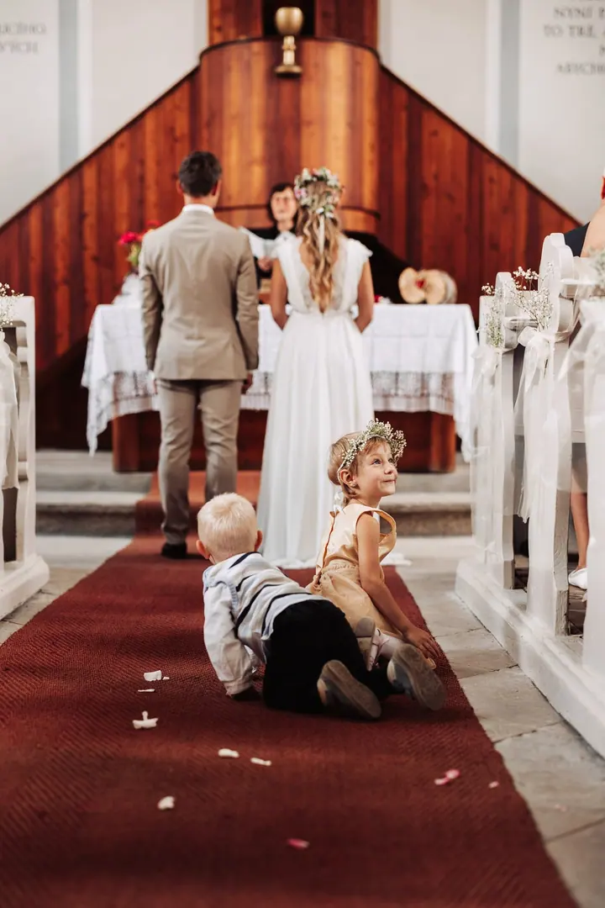
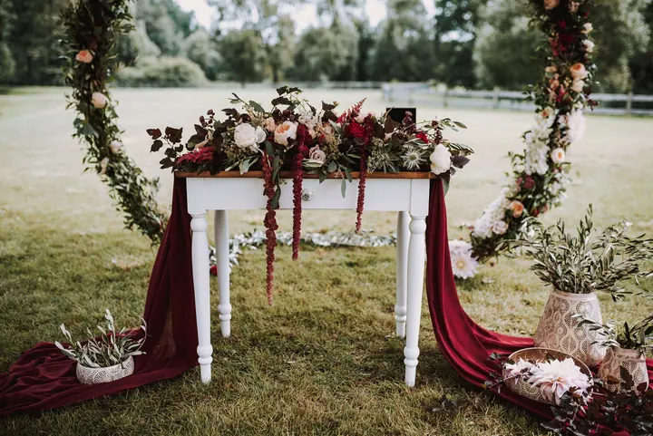

Svatby
Fotím celý svatební den od ranních příprav až po večerní zábavu. Ke každému páru přistupuji individuálně a před svatbou se spolu potkáme, abychom si domluvili průběh i vaše přání.

Jmenuji se Martin Dobrovolný a jsem svatební fotograf ze Znojma. Fotím svatby na mlýnech, statcích i v malých kaplích, od jižní Moravy po Vysočinu. Nejvíc mě baví, když …
Rezervovat termínFocení je pro mě srdeční záležitost, ne jen způsob, jak se uživit. Když si mě vyberete pro svůj svatební den, beru to jako velkou čest a podle toho k němu přistupuji. Krásné fotky a vaše spokojenost jsou pro mě vždy na prvním místě.


Mám rád místa, která mají vlastní příběh. Jitkovský mlýn na Vysočině jsem si zamiloval hned napoprvé, s tancem ve stodole, vlaštovkami nad hlavou a staletými duby na hrázi rybníka. A pamatuji si i podvečer na Hodějovickém mlýně, kdy se nad rybníkem objevil tajemný opar a já jen fotil.
Ke každé zakázce mám individuální přístup a jednám profesionálně, ale přátelsky. Kromě svateb fotím portréty, rodiny, interiéry, produkty i firemní akce a umím natočit krátké video. Cenovou nabídku vám rád připravím přesně na míru.
Co fotím
Fotím celý svatební den od ranních příprav až po večerní zábavu. Ke každému páru přistupuji individuálně a před svatbou se spolu potkáme, abychom si domluvili průběh i vaše přání.
Kromě svateb fotím portréty a rodinné focení. Postarám se, abyste se před objektivem cítili přirozeně, i když zrovna nevíte, co s rukama.
Fotím reportáže z firemních akcí a dokážu vám vytvořit i krátké video. Cenovou kalkulaci připravím přesně na míru.
Fotím interiéry a produkty pro vaši prezentaci. Rád s vámi probereme, co přesně potřebujete.
Postup
Přes kontaktní formulář se zeptejte na volný termín a pošlete pár slov o vaší svatbě. Připravím vám cenovou kalkulaci na míru.
Potkáme se, domluvíme průběh dne, rozsah focení a vaše přání. Rád vám dám i pár rad, jak si focení co nejvíc užít.
Jsem s vámi od příprav až po večerní zábavu. Fotím nenápadně, aby vám nic neuniklo, ani skupinové fotky, ani drobné detaily.
Upravené fotografie vám pošlu obvykle do tří týdnů, abyste si mohli svůj den připomenout co nejdřív.
Otázky
Každá svatba je jiná, proto vám cenu spočítám přesně na míru podle rozsahu focení. Stačí mi napsat přes formulář.
Ano. Fotím svatby na Znojemsku, na jižní Moravě i na Vysočině, na mlýnech, statcích, zámcích i v kaplích.
Ano, a doporučuji ho. Vyzkoušíme si spolupráci před objektivem a ujasníme si představy, takže na svatbě už budete úplně v klidu.
Kromě fotek vám dokážu vytvořit i krátké video. Napište mi, co si představujete, a domluvíme se.